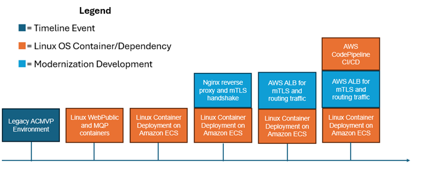

Research Infrastructure Workstream#
Introduction#
Over the past few months, the infrastructure workstream team adopted an iterative approach to modernize the CMVP supporting infrastructure. Each iteration introduced progressively advanced architectures, leveraging cloud-native services to improve scalability, portability, deployment speed, and security, all while ensuring cost efficiency. The modernization efforts have resulted in a containerized application compatible with both Windows and Linux platforms using Amazon Elastic Container Service. Furthermore, it integrates a managed database service to enhance operational efficiency and features a fully automated CI/CD pipeline to simplify and streamline deployments on a Linux platform. Authentication mechanisms have been modernized to incorporate cloud-native solutions, including the AWS ALB. The remaining tasks include completing a final iteration that employs AWS Elastic Kubernetes Service as an alternative container deployment service and implementing Amazon API Gateway to modernize the authentication process for server API requests.
Contributions and Acknowledgements#
The Research Infrastructure Workstream is led by Raoul Gabiam of The MITRE Corporation and Douglas Boldt of Amazon, with contributions from Courtney Maatta, Annie Cimack, Diana Brooks, Charlotte Fondren, Zhuo-Wei Lee, Keonna Parrish, Abhishek Isireddy, Abi Adenuga, Bradley Wyman, Brittany Robinson, Gina McFarland, Damian Zell, Cavan Slaughter, Rayette Toles-Abdullah, Keith Hodo, John Dwyer, Ahmed Virani, Daftari Mrunal, Kasireddi Srikar Reddy, Srujana Alajangi, and Natti Swaminathan of Amazon; Robert Staples and Murugiah Souppaya of NIST; Jason Arnold of HII; Michael Dimond, Kyle Vitale, Phillip Millwee, and Josh Klosterman of the MITRE Corporation; and John Booton, Aaron Cook, and Jeffrey LaClair of ITC Federal.
Modernization Approach#
The existing CMVP production environment was initially deployed in a data center internal to NIST. A subset of the environment that was providing services to the test labs was virtualized and migrated to AWS GovCloud to take advantage of the high availability and resiliency offered by cloud infrastructure. The CMVP system administrators have maintained the AWS infrastructure for several years.
The modernization journey started with a complete inventory and understanding of the existing production environment in AWS which includes all the virtualized assets, the network, data flows, functionalities, and dependencies. Once the existing architecture was fully documented, it was replicated in a research environment managed by the NCCoE team to establish an initial baseline that could be analyzed and opportunities were identified to incrementally modernize the application and supporting infrastructure throughout the lifecycle of this project. The NCCoE research is performed in AWS to ensure the findings can be easily replicated in the production environment. The objective is to deliver the new capabilities required at the application level to support the Protocol Workstream while maintaining some compatibilities with the existing production environment.
Replication of the Legacy Production CMVP Environment#
This section gives historical context to the ACMVP application. The production CMVP AWS environment was replicated to the current ACMVP Research Environment. This set a baseline from which modernization opportunities were identified.
Figure 1 represents the baseline architecture present in the research environment before modernization efforts.
Figure 1. Legacy System Architecture Figure
The External Amazon Virtual Private Cloud (VPC) handles any public-facing applications and utilities, including the WebPublic application (sitting underneath Microsoft IIS) and the public database. These services are split into two separate Amazon EC2 instances.
The Internal Amazon VPC hosts private applications and utilities, including the MessageQueueProcessor (MQP) application and the internal database. These services are split into two separate Amazon EC2 instances.
The Shared Amazon VPC hosts shared applications and utilities, including JetBrains TeamCity for CI/CD, the Certificate Authority (CA) server, the file share service for backups and logs, and the Microsoft Active Directory service. This is all hosted on one Amazon EC2 instance in the research environment for the sake of simplicity.
Figure 2 details the steps in the workflow that occur when the user submits a request. This is listed in this document to describe the necessary tools and their use cases in the critical workflow.
Figure 2. Legacy System End User Workflow
WebPublic is publicly available for registered NVLAP users to submit their requests. This includes authentication requests, which are partially handled by Microsoft IIS for Windows Server through mutual TLS (mTLS). Microsoft IIS receives its server-hosting certificate through the CA Server. The application stores and retrieves data from the Public DB as needed by the requests it receives. Any stored data is replicated to the Internal DB through the encrypted message queue (MQ). The MQP processes the request and stores necessary changes to the Internal DB, which is replicated to the Public DB for user retrieval. Logging occurs throughout the process, tracking the request and where in the WebPublic or MQP application the processing is at. These logs are stored to a file share for access by a system administrator, along with database backups.
AWS Target Architectures by Service#
This section maps services in the baseline legacy infrastructure to equivalent services provided by AWS. Due to the familiarity the CMVP system administrators have with hosting environments in AWS, the research was focused on AWS-based solutions. This document only addresses AWS services; however, equivalent services could be found in other cloud providers.
Table 7 below provides the mapping between services used in the legacy ACMVP research environment and equivalent services offered by AWS. A more detailed explanation between the mappings can be found below, as there are technical differences between the services being mapped. Additionally, explanations are provided for selected mapped services. Services in bold are those that were modernized to equivalent versions. Services in italics were not selected for modernization.
Service In Legacy ACMVP |
AWS Equivalent Service(s) Considered |
AWS Selected Service(s) |
|---|---|---|
Microsoft SQL Server Database |
Amazon Relational Database Service (RDS) for SQL Server, Amazon Aurora, PostgreSQL |
Amazon RDS for SQL Server |
Microsoft SQL Server Replication |
AWS Database Migration Service (DMS) |
AWS DMS |
JetBrains TeamCity |
AWS CodePipeline & AWS CodeBuild |
AWS CodeBuild |
WebPublic |
Containerized Application, Amazon Elastic Container Service (ECS), Amazon Elastic Kubernetes Service (EKS), Amazon Lambda |
Amazon ECS and Amazon EKS |
MessageQueueProcessor |
Containerized Application, Amazon ECS, Amazon EKS, Amazon Lambda, Amazon SQS, Amazon MQ |
Amazon ECS and Amazon EKS |
Microsoft IIS |
AWS Application Load Balancer (ALB), AWS Network Load Balancer (NLB), Amazon API Gateway, Nginx Reverse Proxy |
AWS Application Load Balancer |
Microsoft Active Directory |
AWS Managed Microsoft AD |
No changes made |
Microsoft Windows AD DS |
AWS Route 53 with AWS Managed Microsoft AD |
No changes made |
File Share |
Amazon FXs for Windows, Amazon S3, AWS Storage Gateway |
No changes made |
Git Repository |
AWS Code Commit |
No changes made |
Equivalent AWS services for the Microsoft SQL Server Database are Amazon RDS for SQL Server, Amazon Aurora, and PostgreSQL. Amazon Aurora only supports MySQL and PostgreSQL, requiring a change from the ACMVP’s use of Microsoft SQL Server. Amazon RDS supports a managed version of Microsoft SQL Server. Amazon RDS was selected as the modernization approach due to the existing CMVP code that relies on Microsoft SQL Server.
AWS DMS was selected following the decision to use Amazon RDS to meet the need for data replication. Data replication in Amazon RDS requires AWS DMS, as the instances hosting the databases are managed by AWS and may change IP addresses over time. AWS manages this by providing DNS names to resolve the IP addresses for the databases.
JetBrains TeamCity’s equivalent service is mapped to AWS CodeBuild. AWS CodeBuild was selected because it provides support for changes made in GitHub to be automatically deployed to container versions hosted in Amazon ECS Fargate.
WebPublic had the potential to be containerized or moved to an Amazon Lambda function. The containerized option was selected as it enables local testing, integrates with GitHub, simplifies the deployment process, and allows for portability of the codebase. Note that streamlining the deployment process and improving code portability were desired outcomes of the production CMVP infrastructure support team. WebPublic was deployed via a Docker daemon on a NIST Secure Amazon EC2 instance to meet security requirements for a demo server, but Amazon ECS and Amazon EKS were selected as the modernization approaches in the research environment.
The MQP was mapped to other MQ services. However, the developed MQP performs functions unique to the ACMVP application, resulting in a decision to containerize the application.
Microsoft IIS was mapped to AWS ALB, AWS NLB, Amazon API Gateway, and Nginx Reverse Proxy. The AWS NLB only handles layer 3 request routing to the application, requiring Microsoft IIS or Nginx to process mTLS authentication, or Amazon API Gateway to process API keys as an alternative mode of authentication. The AWS ALB was selected as it processes both mTLS authentication and the routing to the containerized WebPublic application. The other tools may still meet the requirements but were not explored further.
While equivalent services were identified for GitHub, Microsoft Active Directory, Microsoft Windows AD DS, and File Share, these services were left unchanged as they were already well established within the environment.
Key Modernization Components#
This section describes the specific modernization research items completed or planned in the scope of the ACMVP application. As the application is a REST API with a backend database and MQP, similarly structured applications can utilize this research in making informed decisions to update, improve, or otherwise modernize their infrastructure.
Figures 3, 4, and 5 depict a timeline of the key modernization components that have been implemented before ICMC ‘25 and are planned to be implemented following ICMC ‘25. A flag in dark blue represents a timeline event, green represents a Windows OS container development, cyan represents a general modernization development, and orange represents a Linux OS container development. Note that AWS CodePipeline CI/CD is in orange, as it only applies to Linux OS containers, as explained within the Application Deployment Modernization section.
Figure 3. Windows Container OS Modernization Progression
Figure 4. Linux Container OS Modernization Progression

Figure 5. Future Research Progression
Figure 6 shows the services and tools used in the modernized system architecture.
Figure 6. Modernized System Architecture
Figure 7 depicts the desired client workflow through the modernized resources. The client connects to an AWS NLB or ALB, whose destination is open to the public. The load balancer forwards the traffic to the WebPublic application, running through one of the launch types identified in the Application Deployment Modernization section. This application uses its connection to the Public Database to store the data passed through by the client. AWS DMS, lying in the Internal Amazon VPC, replicates that information to the Internal Database through the MessageQueue table. The MQP recognizes the new items in the queue and processes them, finishing its processing by storing updates back into the Internal Database. These updates are replicated back into the External Database through the AWS DMS instance. Once updates are populated into the External Database, clients can view those changes through their original connection workflow.
Figure 7. Modernized Client Workflow
Figures 8 and 9 depict the different workflows the system administrator and the developer take to implement updates to the application code or database.
Figure 8. Modernized System Administrator Workflow
Figure 9. Modernized Developer Workflow
To make code changes, a developer would push their changes to a code repository, like GitHub. From there, a container build is completed either locally by a system administrator or through the AWS CodePipeline, where a container image is created and stored in the Amazon Elastic Container Registry (ECR). Once those changes are pushed, new tasks can be started (manually or automatically) with the updated application code.
To make database changes, a developer would generate a backup of the database they would like to deploy in the modernized environment. This backup would be given to the system administrator, where the backup is placed into a private Amazon S3 bucket. The system administrator can then connect to a database connector, where the backup can be retrieved from Amazon S3 and deployed into the Amazon RDS instance. This process requires AWS DMS replication to be reinitiated for the new set of desired tables.
CI/CD Pipeline Modernization with AWS CodePipeline#
AWS CodePipeline automates the continuous integration and deployment (CI/CD) process, replacing legacy CI/CD solutions currently in production. The pipeline is structured into multiple stages that ensure code tracking, containerized builds, artifact storage, and automated deployment to AWS services. AWS CodePipeline was only tested while deploying to AWS services.
Source Control & Change Detection - Github + AWS CodePipeline#
AWS CodePipeline is integrated with GitHub, allowing it to automatically detect new code changes in the repository. When a developer pushes new code, AWS CodePipeline triggers the pipeline execution, ensuring an automated and streamlined development lifecycle.
Build & Containerization - AWS CodeBuild + Amazon ECR#
AWS CodeBuild is used to build Docker containers based on the latest code changes. The build process includes compiling, testing, and packaging the application into containerized images. These images are then tagged and stored securely in Amazon ECR for deployment.
Deployment & Orchestration - AWS CodeDeploy + Amazon ECS#
AWS CodeDeploy handles the deployment of containerized applications into Amazon ECS. Amazon ECS ensures that the latest container versions are automatically deployed and scaled across available compute resources.
Database Modernization#
Database modernization focuses on modernizing the hosting environment for the database service. The application requires an internal and external database with replication of data between the two to communicate updated information.
Amazon Relational Database Service (Amazon RDS)#
The Microsoft SQL Server 2019 edition in the ACMVP demo environment has been replaced with Amazon RDS for SQL Server 2022, with a standard license.
AWS Database Migration Service (AWS DMS)#
Microsoft SQL Server allows for native data replication in the legacy ACMVP research environment. However, the migration to Amazon RDS necessitates a new data replication service because the underlying resource hosting the database is not owned by the customer, but by AWS. AWS DMS maintains replication between the Amazon RDS databases.
Application Deployment Modernization#
The application deployment modernization focuses on containerizing the WebPublic and MQP applications. Utilizing containers provides benefits and options such as blue/green deployments, vulnerability scanning the images in a registry in advance of deployments, and less exposure times from routine deployments.
Figure 10 demonstrates the progression of the approaches taken to modernize the application into a container. The markers on the top represent the Microsoft Windows Container while the markers on the bottom represent the Linux Container.
Figure 10. Progression of Containerization Builds
The closest iteration to the original ACMVP environment is the Microsoft Windows container that encapsulates both the application and the Microsoft IIS proxy to authenticate and route traffic. This solution containerizes the precise environment that exists in the WebPublic Amazon EC2 instance.
The Linux container with an Nginx sidecar advances the environment by offering a smaller container image size and proxy being utilized. It allows for the container or Nginx to be modified without causing the other to be taken offline, decoupling the application.
The AWS ALB lifts the authentication and proxy services into cloud services. This approach allows AWS ALB to handle the mTLS handshake.
Further research is planned for the Amazon API Gateway, referred to later in the document.
Microsoft Windows Containers#
Microsoft Windows containers were the starting point of the research, since they run the same OS as the legacy ACMVP infrastructure. Additionally, they allow the use of Microsoft IIS in the container to handle the mTLS handshake for authentication. The applications were successfully containerized and enabled the modernization of the supporting infrastructure. However, there was a limitation with the AWS CodeBuild/CodePipeline integration, which requires docker-in-docker.
Linux Containers#
Linux containers do not support Microsoft IIS (where mTLS authentication is handled), which resulted in research for alternative authentication mechanisms. Nginx was found as an open-source solution that can be hosted locally in a container. AWS ALB was found as a cloud solution.
Linux containers support docker-in-docker, required for AWS CodeBuild which enables streamlined code deployment.
Amazon EC2 Launch#
This container launch type utilizes a base Amazon Machine Image (AMI) to launch onto an Amazon EC2 instance. The container runs via docker daemon. The container is built locally. Network connections are routed through the Amazon EC2 instance to the underlying container.
Amazon ECS Fargate Launch#
The serverless Amazon ECS Fargate service provides a hosted platform for containerized tasks and services. Managed components consist of automation around host provisioning and compute monitoring. The end user is responsible for managing Amazon ECS tasks or service definitions that interface with the AWS-provided host through a mixture of AWS Identity and Access Management (IAM) controls, Amazon VPC security groups, and Elastic Network Interface (ENI) allocations.
Amazon ECS with Amazon EC2 Instance Launch#
This launch type was identified but the research has not yet been completed. The team plans to continue research into this option following ICMC ‘25. This launch type allows more granular control of the underlying Amazon EC2 instance hosting the container by the system administrator.
Amazon EKS Fargate and Amazon EKS Auto Mode Launch#
The Amazon EKS Auto Mode launch type was identified as part of this research. The team plans to explore this option in earnest following ICMC ‘25. As with the Amazon ECS Fargate launch type, the foundational pieces controlling container workloads are managed and maintained by AWS.
NCCoE can leverage a majority of the underlying functionality provided by the Kubernetes service stack, such as workload management, security policy enforcement, service discovery, and many others.
As previously mentioned, the Amazon EKS Fargate service provides an AWS-managed solution for containerized workloads. This leverages the automated host provisioning and auto-scaling integration behind the scenes with Amazon EC2. Cluster owners will only manage how defined services and containerized workloads will interface with the underlying host through security groups and Elastic Network Interface (ENI) mappings.
Layer 3 Authentication Modernization#
Nginx Reverse Proxy#
Nginx is a reverse proxy that routes requests to the ACMVP server, similar to the use of Microsoft IIS in the WebPublic application. Nginx supports mTLS authentication, allowing it to verify client certificates before forwarding requests. Nginx in a Linux container maintains robust load balancing, security, and authentication capabilities.
AWS Application Load Balancer (ALB)#
An AWS Network Load Balancer (AWS NLB) was initially used to route traffic to the containerized application with Microsoft IIS. This architecture was then transitioned to an AWS Application Load Balancer (AWS ALB) because the AWS ALB can handle both the routing to the containerized application and the application-level authentication previously handled by Microsoft IIS.
The AWS ALB completes the mTLS handshake, further decoupling that service from the WebPublic application. Certificate details may be passed on to the application for any further authentication or logging details required.
Amazon API Gateway#
Amazon API Gateway is an AWS service for creating, publishing, maintaining, monitoring, and securing REST, HTTP, and WebSocket APIs at any scale. This service allows for a one-to-one layer of connection between the gateway and the ACMVP web app endpoints. This layer enables the development team to provision, distribute, and revoke API keys as an alternative and modern form of authentication for each API request made to the server. In combination with other services like AWS Cognito, labs could manage their own credentials to further improve operational efficiency.